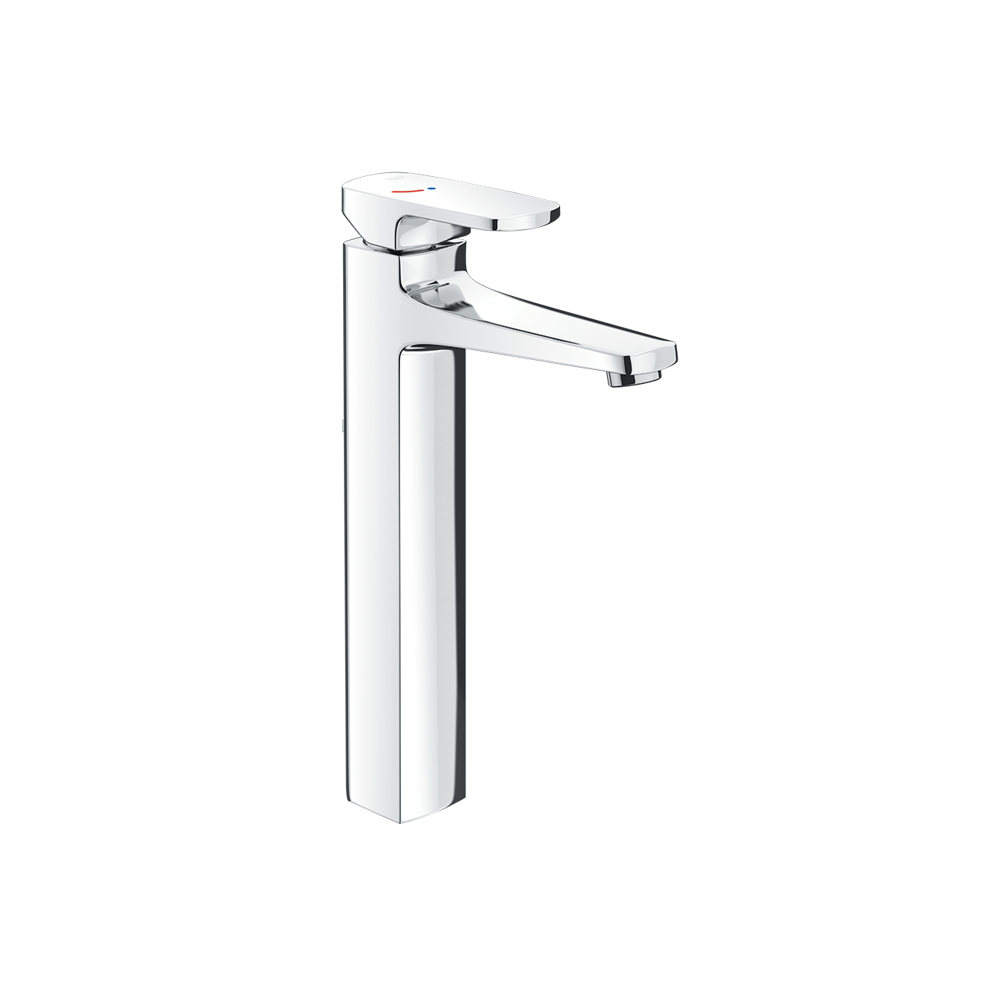
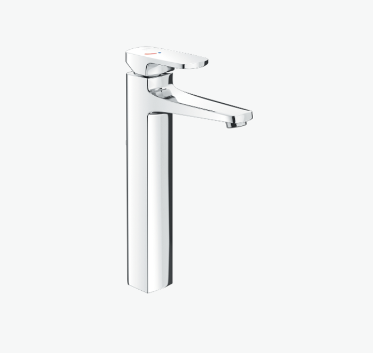
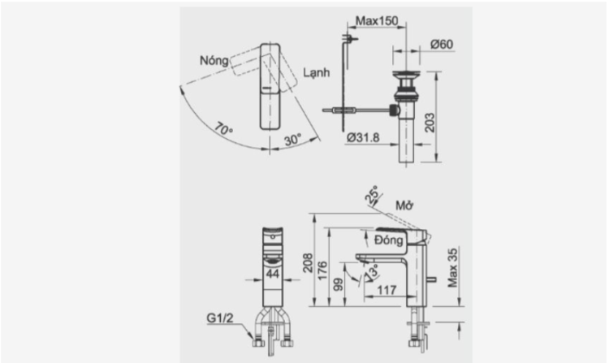

Sen vòi đơn LFV-5012SH thuộc dòng S200 của thương hiệu thiết bị vệ sinh INAX là sản phẩm tiêu biểu hội tụ đầy đủ các yếu tố: chất liệu cao cấp, công năng vượt trội và thiết kế sang trọng. Đây là lựa chọn lý tưởng cho những ai mong muốn sở hữu không gian sống tiện nghi và đẳng cấp.Chất liệu cao cấp, chất lượng, độ bền vượt trộiSen vòi đơn LFV-5000SH được phủ lớp mạ Crom-Niken sáng bóng, vừa tạo vẻ ngoài sang trọng vừa chống han gỉ, oxy hóa, duy trì độ mới lâu dài.Chất liệu đồng thau cao cấp bên trong giúp nguồn nước không bị nhiễm khuẩn, an toàn tuyệt đối cho sức khỏe người dùng.Van điều khiển bằng sứ chất lượng cao, nổi bật với độ bền vượt trội, giảm thiểu tình trạng rò rỉ và hư hỏng theo thời gian.Đáp ứng cả về tính thẩm mỹ lẫn độ an toàn, phù hợp cho mọi gia đình.Hai cơ chế nóng - lạnh linh hoạtSen vòi đơn LFV-5000SH giúp người dùng dễ dàng lựa chọn nhiệt độ nước phù hợp với điều kiện thời tiết và nhu cầu cá nhân nhờ vào cơ chế nóng - lạnh linh hoạt của sản phẩm.Tay gạt vận hành êm ái, đóng mở nhẹ nhàng, mang lại trải nghiệm thoải mái ngay cả khi sử dụng thường xuyên.Dòng chảy ổn định, hạn chế tối đa tình trạng văng nước, giữ khu vực xung quanh luôn sạch sẽ, khô ráo.Tuổi thọ trên 10 năm, sản phẩm không chỉ giúp tiết kiệm chi phí thay mới mà còn mang đến sự yên tâm khi sử dụng lâu dài.Thiết kế sang trọng, kiểu dáng thanh thoátThuộc dòng S200, sen vòi đơn LFV-5000SH mang kiểu dáng thanh thoát, sang trọng với phần thân trụ vuông thon gọn, bề mặt sáng bóng phản chiếu ánh sáng tinh tế.Tay gạt dẹt, mảnh gọn, được bố trí phía trên, dễ dàng điều chỉnh nhiệt độ và lưu lượng nước chỉ bằng một thao tác nhẹ.Phần vòi được thiết kế vát nhẹ, hướng dòng chảy gọn gàng, tạo cảm giác mềm mại nhưng vẫn toát lên sự mạnh mẽ, hiện đại.Với chiều cao hợp lý và dáng đứng vững chắc, sản phẩm vừa đáp ứng công năng vừa là điểm nhấn thẩm mỹ cho lavabo trong phòng tắm cao cấp.Video giới thiệu vòi chậu INAXBản vẽ sen vòi đơn LFV-5000SHThông số kỹ thuậtTên sản phẩmSen vòi đơn LFV-5000SHDạngVòi chậu đặt bàn nóng lạnhChất liệuMạ Crom-NikenKích thước-Đặc điểm- Van điều khiển bằng sứ có độ bền cao, chống rò rỉ nướcThương hiệuINAXKhác- Hotline tư vấn và bảo hành: 18006633
Sen vòi đơn LFV-5000SH
Vòi chậu thương hiệu INAX.
Đã cập nhật danh sách yêu thích.
DANH MỤC: Vòi chậu
MÃ SẢN PHẨM: LFV-5000SH
DEPTH: mm
HEIGHT: mm
WIDTH: mm
Sen vòi đơn LFV-5012SH thuộc dòng S200 của thương hiệu thiết bị vệ sinh INAX là sản phẩm tiêu biểu hội tụ đầy đủ các yếu tố: chất liệu cao cấp, công năng vượt trội và thiết kế sang trọng. Đây là lựa chọn lý tưởng cho những ai mong muốn sở hữu không gian sống tiện nghi và đẳng cấp.Chất liệu cao cấp, chất lượng, độ bền vượt trộiSen vòi đơn LFV-5000SH được phủ lớp mạ Crom-Niken sáng bóng, vừa tạo vẻ ngoài sang trọng vừa chống han gỉ, oxy hóa, duy trì độ mới lâu dài.Chất liệu đồng thau cao cấp bên trong giúp nguồn nước không bị nhiễm khuẩn, an toàn tuyệt đối cho sức khỏe người dùng.Van điều khiển bằng sứ chất lượng cao, nổi bật với độ bền vượt trội, giảm thiểu tình trạng rò rỉ và hư hỏng theo thời gian.Đáp ứng cả về tính thẩm mỹ lẫn độ an toàn, phù hợp cho mọi gia đình.Hai cơ chế nóng - lạnh linh hoạtSen vòi đơn LFV-5000SH giúp người dùng dễ dàng lựa chọn nhiệt độ nước phù hợp với điều kiện thời tiết và nhu cầu cá nhân nhờ vào cơ chế nóng - lạnh linh hoạt của sản phẩm.Tay gạt vận hành êm ái, đóng mở nhẹ nhàng, mang lại trải nghiệm thoải mái ngay cả khi sử dụng thường xuyên.Dòng chảy ổn định, hạn chế tối đa tình trạng văng nước, giữ khu vực xung quanh luôn sạch sẽ, khô ráo.Tuổi thọ trên 10 năm, sản phẩm không chỉ giúp tiết kiệm chi phí thay mới mà còn mang đến sự yên tâm khi sử dụng lâu dài.Thiết kế sang trọng, kiểu dáng thanh thoátThuộc dòng S200, sen vòi đơn LFV-5000SH mang kiểu dáng thanh thoát, sang trọng với phần thân trụ vuông thon gọn, bề mặt sáng bóng phản chiếu ánh sáng tinh tế.Tay gạt dẹt, mảnh gọn, được bố trí phía trên, dễ dàng điều chỉnh nhiệt độ và lưu lượng nước chỉ bằng một thao tác nhẹ.Phần vòi được thiết kế vát nhẹ, hướng dòng chảy gọn gàng, tạo cảm giác mềm mại nhưng vẫn toát lên sự mạnh mẽ, hiện đại.Với chiều cao hợp lý và dáng đứng vững chắc, sản phẩm vừa đáp ứng công năng vừa là điểm nhấn thẩm mỹ cho lavabo trong phòng tắm cao cấp.Video giới thiệu vòi chậu INAXBản vẽ sen vòi đơn LFV-5000SHThông số kỹ thuậtTên sản phẩmSen vòi đơn LFV-5000SHDạngVòi chậu đặt bàn nóng lạnhChất liệuMạ Crom-NikenKích thước-Đặc điểm- Van điều khiển bằng sứ có độ bền cao, chống rò rỉ nướcThương hiệuINAXKhác- Hotline tư vấn và bảo hành: 18006633
DANH MỤC: Vòi chậu
MÃ SẢN PHẨM: LFV-5000SH
DEPTH: mm
HEIGHT: mm
WIDTH: mm